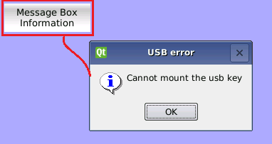

Il est possible d'associer à la pression d'un bouton ATCM la visualisation d'une fenêtre popup. Par exemple, cette fenêtre peut avoir une icône d'“information”, d'“avertissement” de message “critique”.
Suivez le chapitre “Fonction implémentée par l'utilisateur” et entrez le code suivant:
QMessageBox::information(this,trUtf8(“USB error”), trUtf8(“Cannot mount the usb key”));
Dans ce cas, lorsqu'on appuie sur la touche, une fenêtre contenant l'icône “information” s'affiche.

Dans l'exemple, l'écriture USB error correspond au titre,alors que l'écriture Cannot mount the usb key est le message.
Saisissez le code suivant au début de pagexxx.cpp:
#include <QMessageBox>
Pour afficher l'icône “avertissement” ecrivez:
QMessageBox::warning(this,trUtf8(“USB error”), trUtf8(“Cannot mount the usb key”));
Pour afficher l'icône du message “critique” écrivez:
QMessageBox::critical(this,trUtf8(“USB error”), trUtf8(“Cannot mount the usb key”));